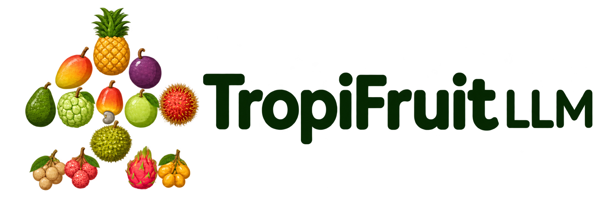

KNOWLEDGE · GENOMICS · MULTI-OMICS
TFruitLLM 1.0
A knowledge- and omics-driven large language model for tropical fruit biology and breeding
Ask a focused research question across thirteen tropical fruit species.
TFruitLLM
LIVE RESEARCH MODESPECIES PORTAL
Explore thirteen tropical fruits
Select a species to open its growth, development, stress-response and omics profile.
Loading species portal…